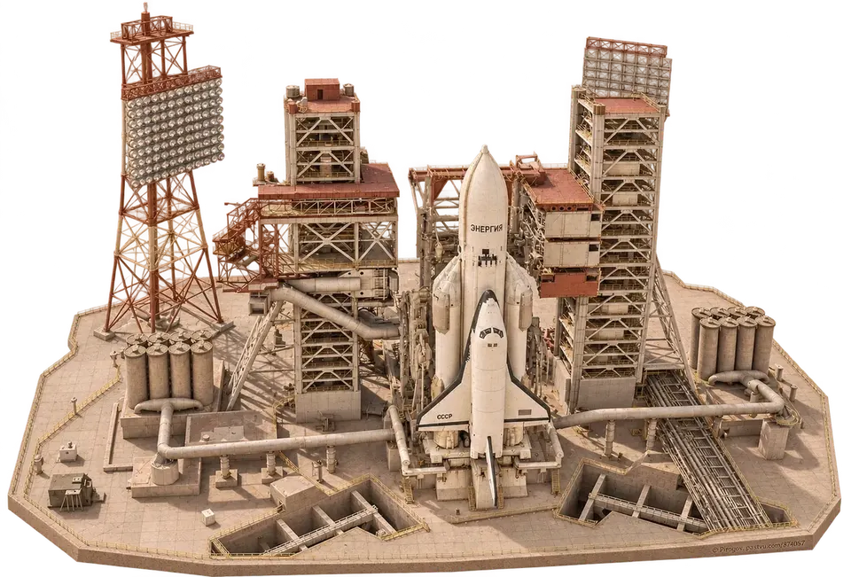
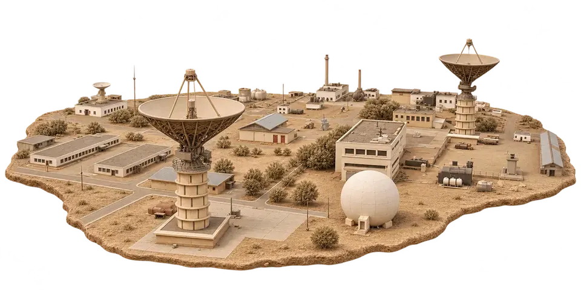
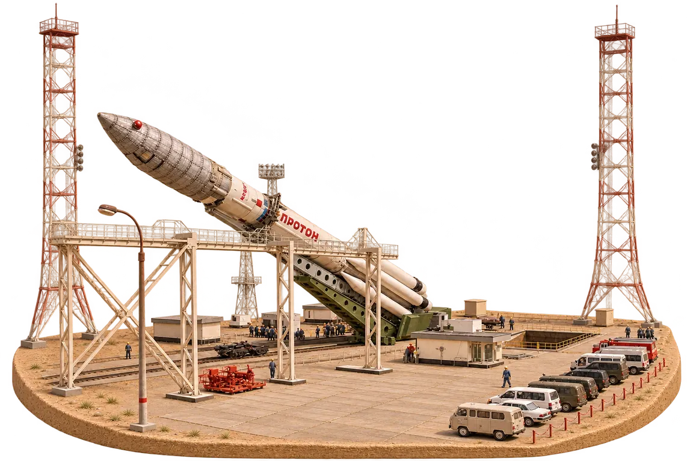

ГРАНД-МАКЕТ
БАЙКОНУР
ИНТЕРАКТИВНЫЙ МУЗЕЙ 3D
ИЗУЧАЙТЕ ПЕРВУЮ
КОСМИЧЕСКУЮ ГАВАНЬ ПЛАНЕТЫ
ЗНАКОМЬТЕСЬ С ИСТОРИЕЙ
И ГЕОГРАФИЕЙ КОСМОДРОМА
ДЕТАЛЬНЫЕ МАКЕТЫ РАКЕТ
И СТАРТОВЫХ КОМПЛЕКСОВ
ДОСТОВЕРНАЯ СХЕМА
ПЛОЩАДОК И ОБЪЕКТОВ
ЦИФРОВЫЕ РЕКОНСТРУКЦИИ
ЗАПУСКОВ И ПОЛЁТОВ
ИСТОРИЯ СТРОИТЕЛЬСТВА
И РАЗВИТИЯ КОМПЛЕКСА
ТРАДИЦИИ, СУЕВЕРИЯ,
МИФЫ И ЛЕГЕНДЫ
ПРИЯТНОГО
ПУТЕШЕСТВИЯ!



КОСМОС НАЧИНАЕТСЯ С НАЗЕМКИ
ВЫБОР МЕСТА ДЛЯ СТРОИТЕЛЬСТВА КОСМОДРОМА
01 / 20
Предпросмотр: демонстрационный цикл полосы загрузки. Откройте музей, чтобы загрузить настоящий макет.